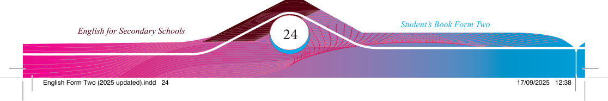

(i) Read the dialogue below. Then, respond to the items that follow.
Serengeti National Park
Imelda: Wow, Haruna, can you believe we’re fi nally here in the Serengeti? I’m
so excited to see all the incredible wildlife.
Haruna: I know, me too! As we drive through the park, I can already see herds of wildebeests grazing in the distance.
Imelda: Yes, look over there! A group of zebras is drinking from the watering
hole. And I can spot a few giraffes munching on the leaves of the
acacia trees.
Haruna: Absolutely amazing! But I haven’t seen any lions yet, which is what
I’m really hoping to see. Because, as you know, they’re the true kings of the Serengeti.
Imelda: Don’t worry, Haruna. I’m sure we’ll see some lions soon. After all, this is their natural habitat. They’re known to roam freely throughout the park.
Haruna: You’re right. And speaking of roaming, I just saw a cheetah sprinting across the grasslands. Wow, they’re truly the fastest land animals on
Earth!
Imelda: Incredible! Furthermore, I can hear the distinct calls of the baboons in the distance. They seem to be quite active today.
Haruna: Defi nitely! And I can see a herd of elephants slowly making their way
through the bush. They are incredibly majestic.
Imelda: Well, I think we’re in for a real treat today. This is exactly the kind of authentic African safari experience I’ve been dreaming of.
Haruna: Me too, Imelda! And I’m sure we’ll see even more amazing animals as we continue our journey through the Serengeti. Let’s keep our eyes peeled!
Imelda: Yes, let’s do that. I can’t wait to see what other wonders this incredible
park has in store for us.
Practice
1. Show the cohesion devices used to write a story.
2. Write two sentences for each device in (1) above.
3. Discuss how cohesive devices help to make a speech.